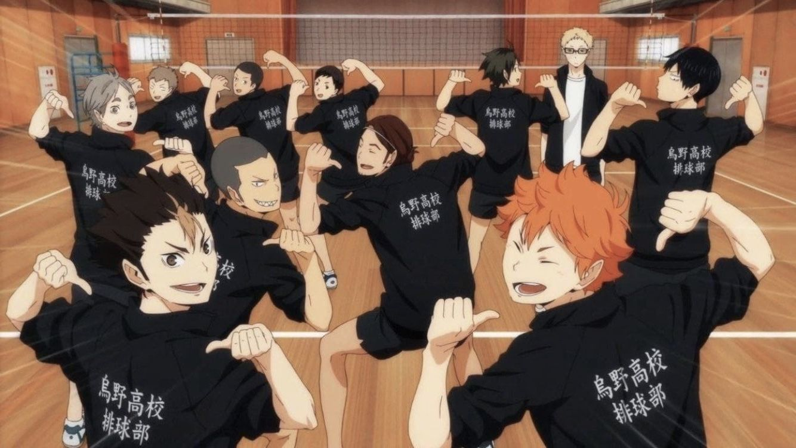

These are the few things that became my interest in the past few years
Ever since COVID-19 struck Indonesia which required us to stay at home for a few months made me watch anime. Anime is an animation typically made in Japan which is either hand drawn or computer drawn. The anime that made me fell into the anime world is Haikyuu. Not only it being the first anime i watched, Haikyuu is also my favourite anime. Haikyuu was originally a manga wroten by Haruichi Furudate. Haikyuu is an anime that revolves around Hinata Shoyou, a student in Karasuno High School who got into volleyball since he was young. Even though he was very interested in volleyball, he was one of the shortest members in his team. But even so, he is able to defeat his opponents with his enormous jumping capability. Other than that, there are a few other anime that I have watched and also very entertaining like Black Clover, Free!, Balance: Unlimited, Kakegurui, Given, Tsurune, Demon Slayer, and lots more.
Other than anime, Korean Drama is one of the things I like to watch in my free time. Before I was introduced to anime, I was more into Korean Drama and K-pop. But, that doesn't mean liking anime made me forget Korean drama. The first Korean drama that i watched was Moon Lovers: Scarlet Heart Ryeo. The drama has 20 episodes, telling the story of an Imperial Heir named Wang Soo. Wang Soo is a man born with a cold personality, but has high royalty. Meanwhile there was a woman named Jang Hyo, in which that day she traveled back in time to the era Wang Soo was in. It does seem a little complicated if you don't watch the drama, but it's a very good drama and i would reccomend if you haven't watched it. Other than that, the few other dramas that i have watched are Orange Marmalade, Moonlight Drawn By Clouds, Goblin, Hwarang, two of my favourite dramas as such: Hotel Del Luna and What's Wrong With Secretary Kim, and many others.
Other than becoming attracted towards anime, the pandemic also made me play an RPG game named Genshin Impact. The game developer is from China, named MIhoyo released this game on September 2020. Players all around the world immediately started playing when the game was released. This is due to the high quality graphic content, and the availability in multiple platforms (Android, IOS, PS4, Windows, and Mac). This is due to the high quality graphic content, and the availability in multiple platforms (Android, IOS, PS4, Windows, and Mac). When entering the world of this game named Teyvat, we can see the beautiful scenery of the sea, cliffs, hills, and also large fields. Teyvat is also an open world, which required the players to explore lots of places. Genshin Impact also has a co-op feature, where we can play and explore Teyvat along with our riends. Other than that, in order to make travelling in such a large map easier, the game has a teleport function. Although, the game might be not that suitable for those who are easily bored.